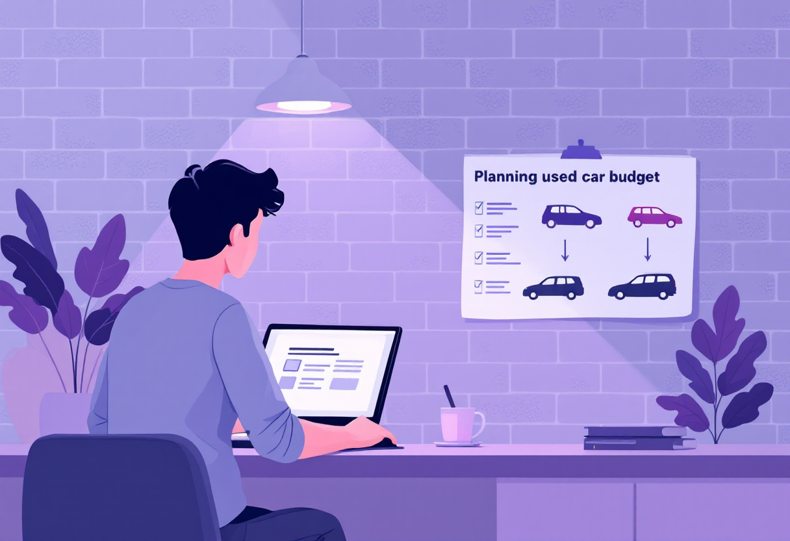
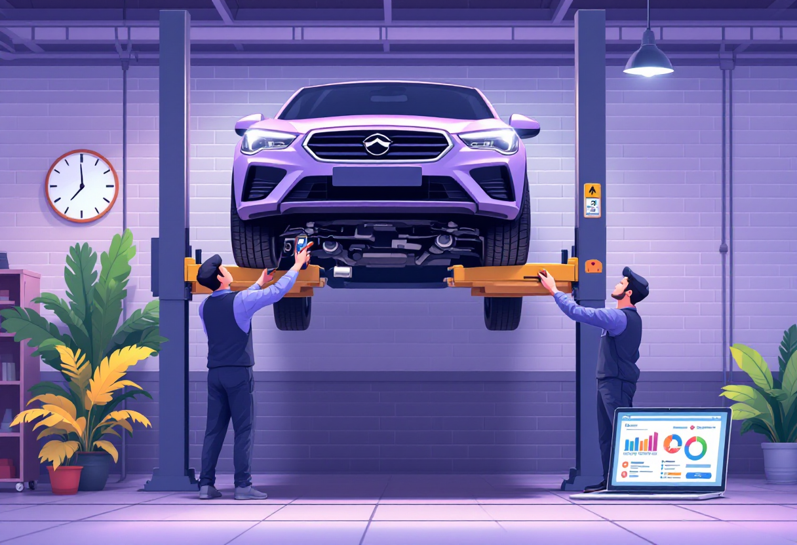

Купівля авто
Перевірки, документи та ризики при купівлі вживаного авто — що знати перед підписанням договору.

З чого починати вибір
Перш ніж їхати на перегляд — визнач критерії. Це зекономить час і захистить від емоційних рішень.
- Визнач бюджет — з урахуванням страховки, техобслуговування та можливого ремонту.
- Обери тип: седан, хетчбек, кросовер — залежно від потреб.
- Переглядай оголошення на AUTO.RIA, OLX, RST — порівнюй ціни на схожі авто.
- Не закохуйся в одне авто до перевірки — варіантів завжди більше.

Обов'язкові перевірки перед купівлею
Не купуй авто без перевірки — ризик отримати проблемний автомобіль дуже високий.
- Перевір VIN-код на AUTO.RIA, Carfax або НАІС — штрафи, ДТП, обтяження.
- Огляд у СТО (незалежному) — підйомник, комп'ютерна діагностика.
- Перевір документи: свідоцтво про реєстрацію, сервісна книжка.
- Перевір відповідність VIN на кузові і в документах.
Оформлення угоди купівлі-продажу
Правильно оформлений договір — це твій захист як покупця.
- Договір купівлі-продажу укладається у нотаріуса або сервісному центрі МВС.
- Обидві сторони: паспорт, ІПН, техпаспорт автомобіля.
- Не платай повну суму до підписання — задаток максимум 10–20%.
- Після підписання — перереєструй авто на себе у центрі обслуговування МВС.
Типові ризики та шахрайські схеми
Ринок вживаних авто має свої пастки. Знай їх — щоб не потрапити.
- «Перекупи» — продають авто з прихованими проблемами після косметичного ремонту.
- Авто в заставі або під арештом — перевіряй у реєстрі обтяжень.
- Скручений пробіг — порівняй сервісні записи та знос деталей.
- Тиск з терміновістю — «є інший покупець» — ознака маніпуляції.